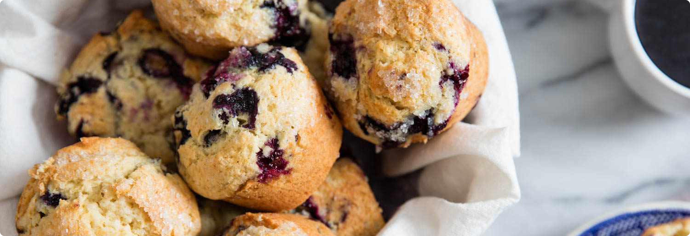

When you are making recipes with beautiful fresh blueberries, you'll want to keep a few things in mind.
Fresh blueberries are at their best from May until early October.
Look for firm, deeply colored berries that are uniform in size. Blueberries will stay fresh
for about 7 days. Before extra berries go bad, you can freeze them. To freeze blueberries, arrange
them on a baking sheet in a single layer to remove external moisture for a couple of hours.
Then put them in a plastic bag or other container. They should last in the freezer until blueberry season next year!

Big blueberry muffins with a crusty sugar topping.
They are quick and easy and made with just a few ingredients.
Makes 12 Servings
INGREDIENTS
1¼ cups of sugar
½ cup unsalted butter
½ teaspoon salt
2 large eggs
2 cups all-purpose flour
2 teaspoons baking powder
½ cup buttermilk
1 pint fresh blueberries
2 tablespoons sugar
non-stick cooking spray
Prep Time: 15 mins
Cook Time: 30 mins
Total Time: 45 mins
DIRECTIONS
- Preheat oven to 375°F degrees.
- Spray the top of a muffin pan with non-stick spray, and lined with paper liners.
- Cream together 1¼ cups of sugar, butter, and salt in a large bowl until light and fluffy.
Beat in eggs one at a time.
- Mix together 1¾ cups flour and baking powder. Beat in the flour mixture alternately with
the buttermilk into egg mixture, mixing just until incorporated.
- Crush ¼ of the blueberries, and stir into the batter. Mix the rest of the whole blueberries
with the remaining ¼ cup flour, and fold into the batter. Scoop into muffin cups. Sprinkle tops
lightly with sugar.
- Bake in the preheated oven until golden brown and tops spring back when lightly tapped, about 30 minutes.